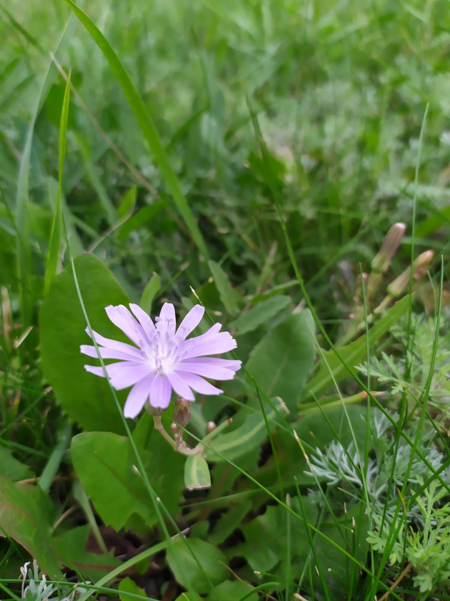

Цикорий произрастает в умеренном и тропическом климате Евразии, от Скандинавии до Средиземноморья, от Британских островов до Восточной Сибири и Индии на юге, на севере Африки. В виде заносного встречается в Южной Африке, Северной и Южной Америке, Австралии и Новой Зеландии.
Ареалом цикория являются луги, лесные поляны, травянистые склоны, в качестве сорного растения встречается на пустырях, около дорог, близ населенных пунктов, на полях.
Благодаря содержанию в млечном соке горьких веществ цикорий повышает аппетит. Из корней получают вкусные ароматные напитки, которые обладают антимикробным и вяжущим действием, повышают аппетит, уменьшают потоотделение, улучшают функциональное состояние пищеварительной системы. Согласно экспериментальным данным, настой из соцветия цикория оказывает успокаивающее действие на центральную нервную систему, тонизирует работу сердца, имеет желчегонное действие.
